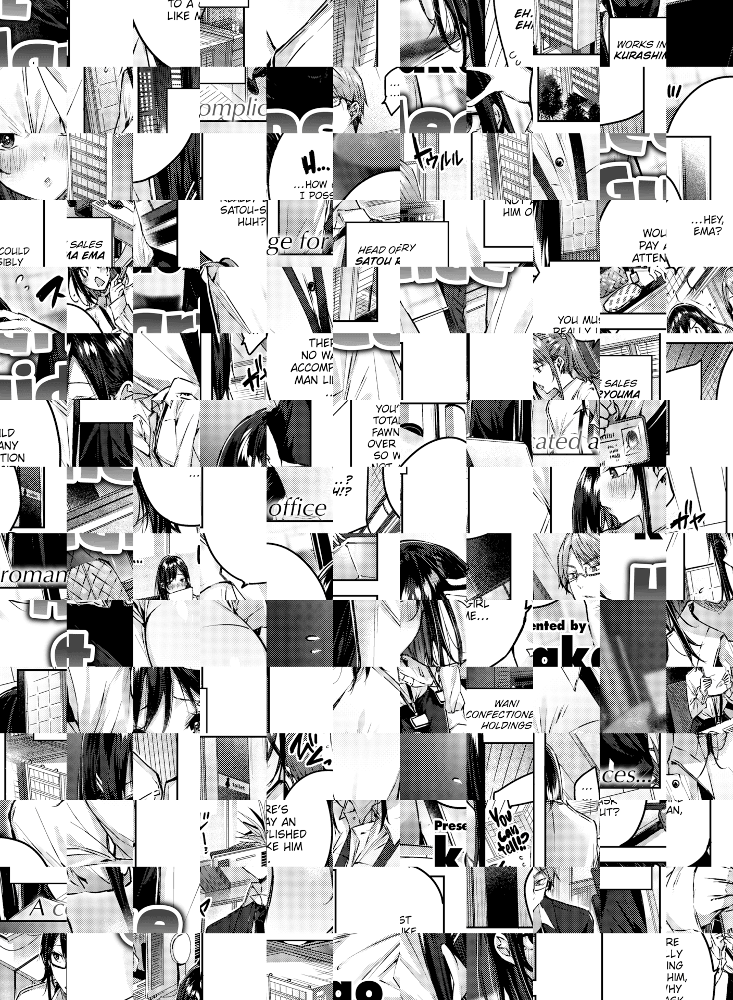
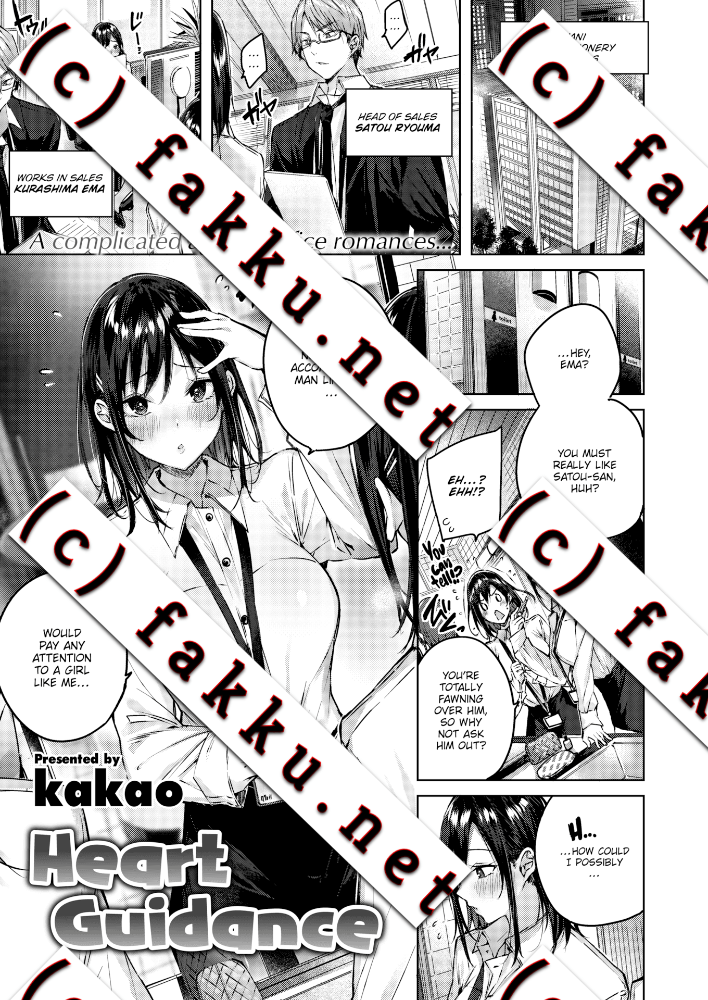

Update 2020.04.20: This approach currently doesn't work anymore, they fixed it!
This document is only for educational purposes. I neither recommend nor want you to go and try this out. This is purely for documentation and "Make-It-Better" thinking of the following mentioned problem. I am not responsible for anything that happens to you if you actually use this script in any way or form. I never used this Script to download anything except the test-image which is shown near the end of this document to prove that it works.
There will be no easy-to-use script at the end. Do not try this. Please subscribe to them to read their content. It's worth it!
FAKKU is a Adult (18+) Hentai Website. You have to pay a monthly fee to read their content, which only consists of very high quality stuff. They opened their content to the public for free during the pandemic of the covid-19 virus (Source: https://twitter.com/FAKKU/status/1244457301454409728) and I wanted to see how a business that depends on online content makes their website secure from people stealing their content. The problem with websites like this is: People could only buy a membership for one month, download all the content, and then read it for free after the month is over, or even worse: distribute it online.
They did a pretty good job with their security measures. You can't simply right-click and save the image. Opening the browser console only shows you a canvas element where the image is being drawn. If you try to read the network activity, then FAKKU will great you with around 300+ debug commands which hold the execution of the website if the console is open. If you manage to bypass this and look at the received files, you will be able to see the first manga page which will look something like this:

Source of image: FAKKU - Heart Guidance, Page 1
I do not own this image! All rights belong to FAKKU
They scramble their image, send it to your browser and then reassemble it and show it on the canvas element. This means simply getting the image of the URL is not possible, because you need to know how the image looks correctly. Not every image is 'scrambled' in the same way, they have their own correct coordinates for every piece of the image.
If you google "Download image from canvas" you will find a lot of solutions that tell you to use the "toDataURL()" function, which lets you convert a canvas object to base64, taking the image from the canvas display and not the source image itself. In our case, this would mean we could save the correctly-displayed image easily by opening this base64 string in a new window and saving it, but FAKKU thought of that. The toDataURL method is disabled for canvas elements. They removed the function internally, which means every canvas element created is missing this function.
The problem reminded me of my anti-cheat writing days, and the so-called "Detouring of functions". FAKKU's website disables the toDataURL function somewhere in their Javascript Files. So instead of searching where it does this and disabling it, why not simply save the function beforehand and reuse it later?
With GreaseMonkey (an Addon to Firefox, Link: https://addons.mozilla.org/de/firefox/addon/greasemonkey/) you can execute custom Javascript code before the website can execute anything. So, the simple solution is: Create your own canvas object before the website loads (which contains the working toDataURL function) and then copy the canvas with the image onto your own canvas after it finished correctly drawing. Now you can use the toDataURL function to save it from your own canvas object, which makes the resulting image look like this:

Source of image: FAKKU - Heart Guidance, Page 1
I do not own this image! All rights belong to FAKKU
Now you can simply advance the pages of the manga by adding +1 to the URLs page count and download the custom canvas object after it finished loading.
I will not provide the code on how to do that. This is only a theoretical experiment, and should not be used to actually download content from FAKKU. Please pay to read their content.